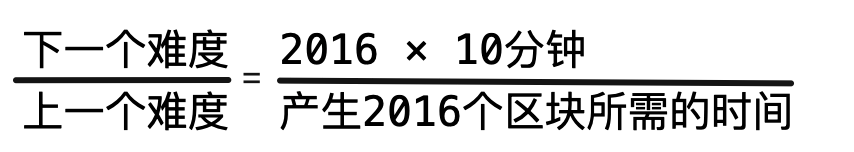

比特币的特点：去中心化、去中介化。
比如说PayPal、支付宝是中介化的，因为它需要中心数据库处理交易，也就是价值转移。而人民币、美元等是中心化的，因为它需要中央银行和印钞厂发行货币。
比特币是去中心化的，由比特币协议的发行机制决定；是去中介化的，由比特币协议的分配机制决定。
比特币系统的设计原则:
比特币系统设计的五个要点：比特币的区块链系统是由分布式账本（即狭义的区块链）和去中心网络（点对点网络）组成的，形成链条的方式是工作量证明共识机制。最长链是由网络中的算力共同决定的，因而它是可信的，节点离开和加入依据的是最长链是可信的这一原则。这些组合起来形成了比特币系统。
-
去中心化的点对点电子现金系统：
比特币要做的是一个“点对点的电子现金系统”，发送方和接收方直接交易，它们之间不需要中介机构的介入。
要去掉可信第三方等中介机构，就需要解决“双花问题”。在摘要中，中本聪给出了点对点网络的解决方案，并介绍了这个方案的核心——区块链。他并没有提到区块链（blockchain）这个词，但在论文中分别提到了区块（block）和链（chain）这两个概念。
-
分布式账本：
比特币的区块链是基于工作量证明形成的带时间戳、存储数据的数据块和由哈希指针连接成的链条。
这个链条或者说账本以分布式的方式存储在比特币网络的各个节点上，因而也被称为分布式账本。
-
工作量证明：
比特币网络中的节点按照规则进行加密哈希计算，以竞争获得生成新区块的权利。节点在竞争获胜后就获得记账权，它生成区块成为最新区块后，就获得与新区块对应的挖矿奖励。
工作量证明也是区块链账本的安全机制。如果不重做“工作量证明”所需的大量计算则此链条不可修改，这一共识机制保证了区块链上的数据的可靠性。
-
最长链原则：
在任何时刻，最长的链条是所有人都接受的最终记录。
由于最长链是由网络中的主要算力完成的，因而只要它们不都与攻击者合作，那么它们生成的最长链就是可信的。这个原则被称为“最长链原则”。
-
去中心网络
比特币的去中心网络的架构非常简洁，本身需要的基础设施很少。它可以在互联网网络上运行。计算机节点可以随时离开或加入这个去中心网络，在加入时它们只需遵守最长链原则即可。
A向B转账如何实现：
1、发起比特币转账交易，A要有地址、私钥和钱包。
2、A在钱包中用私钥对自己的比特币签名，转账给B，从而发起一次交易。
3、通过互联网，交易信息向比特币网络的各个节点进行广播。
4、节点将这个交易打包进区块，开始进行哈希计算即挖矿以赢取记账权。
5、某个节点挖矿成功，向全网广播，新区块形成，添加到链的最后。
6、各个节点认可，即在区块后继续增加区块。挖矿节点获得比特币的挖矿奖励。通常在增加六个区块后，该交易被永久留存。
7、得到转账的比特币。
比特币网络没有一个中心服务器，它是由众多全节点和轻节点组成的，所有的节点形成去中心化网络。
全节点包含所有比特币区块链的区块数据；轻节点仅包括与自己相关的数据。
每个人都可以在比特币区块链上建立“账户”，获得一对公钥和私钥，公钥的哈希值是地址，通过私钥和地址进行交互。
比特币，其实就是未使用的交易输出（UXTO）。往上追溯，每一个比特币都是挖矿出来的。
工作量证明共识机制:
引入了奖励机制:比特币网络中的节点们愿意打包交易、维护账本(挖矿)，因为能获得比特币（自行发行代币的系统）。
超低概率双花：在 6 个区块之后，一个交易发生双花情况的概率可被认为是零。
挖矿过程：
1、挖矿节点计算机，把比特网中未确认的交易按梅克尔树组装成候选区块，未被纳入的交易往后顺延。
2、在创建候选区块时，除了普通交易，还有一个币基交易（创币交易），币基交易是比特币的唯一发行机制。
3、候选区块的头部有一个32位的随机数，反复调整随机数并计算，使得哈希值小于一个目标值；如果试过所有可能性未成功，则调整币基随机数，再反复计算。这个就是加密哈希计算（对比特币来说是SHA-256）。
4、验证哈希值的正确与否只需要1次计算。最先完成计算的节点打包出来的区块，成为新的区块，加到了区块链的最后。在经过6次确认，（即有别的节点在这个区块的基础上进行生成下一个区块，当又生产了6个之后），矿工得到相应的奖励。
如果保持挖出一个区块的时间始终是10分钟：

区块链1.0典型代表：比特币。完成了价值表示和价值转移。专门为去中心化的电子现金设计。
区块链2.0代表：以太坊。
区块链3.0: